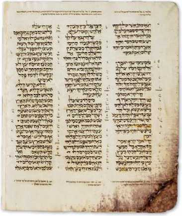
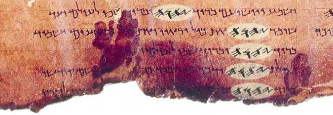
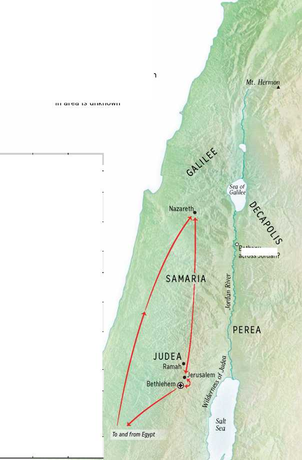
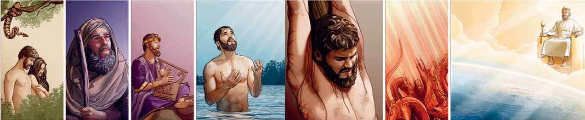
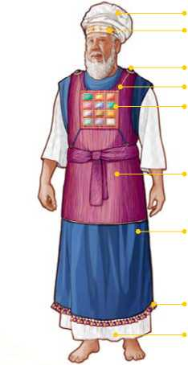
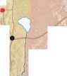
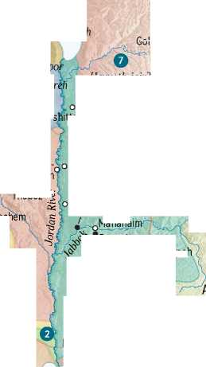
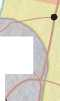
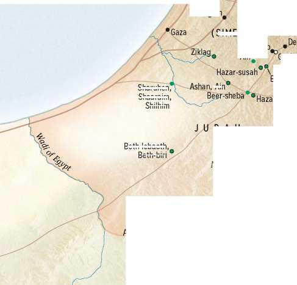
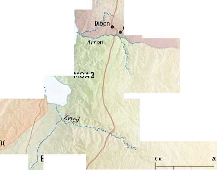

A Study Guide for God’s Word
© 2015
WATCH TOWER BIBLE AND TRACT SOCIETY OF PENNSYLVANIA
PUBLISHERS
WATCHTOWER BIBLE AND TRACT SOCIETY OF NEW
YORK, INC.
Wallkill, NewYork, U.S.A.
July 2015 Printing
This publication is not for sale. It is provided as part of a worldwide Bible educational work supported by voluntary donations.
Unless otherwise indicated, Scripture quotations are from the modern-language New World Translation of the Holy Scriptures.
Photo Credits:
Cover and page 1728: Shrine of the Book, Photo © The Israel Museum, Jerusalem
Page 1734:
© The British Library Board (G.12161)
Page 1738:
Left: From the book
A Pre-Massoretic Biblical Papyrus, by Stanley A. Cook, M. A. (1903)
Page 1739:
From The Codex Alexandrinus in Reduced Photographic Facsimile, 1909, by permission of the British Library
A Study Guide for God's Word
English (sgd-E)
Made in the United States of
America
This booklet belongs to
A1
The Bible was originally written in ancient Hebrew, Aramaic, and Greek. Today it is available in whole or in part in about 2,600 languages. The vast majority of people who read the Bible do not understand the original languages and therefore must rely on a translation. What principles should guide how the Bible is translated, and how did these govern the rendering of the New World Translation of the Holy Scriptures?
Some might conclude that a strict, word-for-word, interlinear-style translation would enable the reader to get closest to what was expressed in the original languages. However, that is not always the case. Consider a few of the reasons:
• No two languages are exactly alike in grammar, vocabulary, and sentence structure. A professor of Hebrew, S. R. Driver, wrote that languages “differ not only in grammar and roots, but also ... in the manner in which ideas are built up into a sentence.” Different languages require quite different thought patterns. “Consequently,” continues Professor Driver, “the forms taken by the sentence in different languages are not the same.”
• No modern language exactly mirrors the vocabulary and grammar of Biblical Hebrew, Aramaic, and Greek, so a word-for-word translation of the Bible could be unclear or at times could even convey the wrong meaning.
• The meaning of a word or an expression may vary depending on the context in which it is used.
A translator may be able to mirror the literal rendering of the original language in some passages, but this must be done very carefully.
Here are some examples of how word-for-word translation can be misunderstood:
• The Scriptures use the expressions “sleep” and “fall asleep” to refer both to physical sleep and to the sleep of death. (Matthew 28:13; Acts 7:60) When these expressions are used in contexts that refer to death, Bible translators can use such wording as “fall asleep in death,” which helps the modern reader avoid confusion.—1 Corinthians 7:39; 1 Thessalonians 4:13; 2 Peter 3:4.
• The apostle Paul used an expression found at Ephesians 4:14 that can be literally translated “in the playing of dice of men.” This ancient idiom alludes to the practice of cheating others when using dice. In most languages, a literal renderi ng of this allusion makes little sense. Translating this expression as “the trickery of men” is a clearer way to convey the meaning.
• At Romans 12:11, a Greek expression is used that literally means “to the spirit boiling.” This wording does not convey the intended meaning in English, so it is rendered “aglow with the spirit” in this translation.
• During his famous Sermon on the Mount, Jesus used an expression that is often translated “Blessed are the poor in spi rit.” (Matthew 5:3, King James Version) But in many languages, a literal rendering of this expression is obscure. In some cases, a strictly literal translation could imply that “the poor in spi rit” are mentally unbalanced or lacking in vital ity and determination. However, Jesus was here teach i ng people that their happiness depended, not on satisfying their physical needs, but on recognizing their need for God’s guidance. (Luke 6:20) Thus, such renderings as “those conscious of their spiritual need” or “those who know their need for God” convey more accurately the meaning of the original expression.—Mat-thew 5:3; The New Testament in Modern English.
oinTcoxoi Ta> nN eyM ATI
MATTHEW 5:3
Litera l English: “the poor in spirit”
Idea: “those conscious of their spiritual need”
• In many contexts, the Hebrew word translated “jealousy” corresponds to the common meaning of the Engl ish word, namely, to feel anger over the apparent unfaithfulness of a close associate or to envy others for their possessions. (Proverbs 6:34; Isaiah 11:13) However, the same Hebrew word also has a positive connotation. For example, it may be used of the “zeal,” or protective ardor, that Jehovah shows for his servants or of his “requiring excl usive devotion.” (Exodus 34: 14; 2 Kings 19:31; Ezekiel 5:13; Zechariah 8:2) It may also be used of the “zeal” that his faithful servants have for God and his worsh i p or of their ‘tolerating no rivalry’ toward him. —Psalm 69:9; 119:139; Numbers 25:11.
• The Hebrew expression that usually refers to the human hand has a wide va riety of meanings. Depending on the context, this word may be rendered “authority,” “generosity,” or “power.” (2 Samuel 8:3; 1 Kings 10:13; Proverbs 18:21) In fact, this particular word is translated over 40 different ways in the English edition of the New World Translation of the Holy Scriptures.
V
The Hebrew word yadh is usually rendered “hand,” but depending on the context, this word may be rendered “authority,” “generosity,” “power,” and many other ways
In view of these factors, Bible translation involves more than simply rendering an original-language word with the same term each time it occu rs. A translator must use good judgment in order to select words in the target language that best represent the ideas of the original-language text. In addition, there is a need to structu re the sentences in a way that conforms to the rules of grammar of the target language, making the text easy to read.
At the same time, extremes in rewording the text must be avoided. A translator who liberally paraphrases the Bible accordi ng to how he interprets the overall idea could distort the meaning of the text. How so? The translator may erroneously insert his opinion of what the original text means or may omit important details contai ned in the original text. So while paraphrases of the
Bible may be easy to read, their very freeness at times may prevent the reader from getting the true message of the text.
Doctri nal bias can easi ly color a translator’s work. For example, Matthew 7:13 says: “Spacious is the road leading off into destruction.” Some translators, perhaps affected by doctrinal bias, have used the term “hell” rather than what the Greek term really means, namely, “destruction.”
A Bi ble translator must also consider that the Bible was written using the common, everyday language of average people, such as farmers, shepherds, and fishermen. (Nehemiah 8:8, 12; Acts 4:13) Therefore, a good translation of the Bible makes the message it contains understandable to sincere people, regardless of their background. Clear, common, readily understood expressions are preferred over terms that are rarely used by the average person.
Quite a number of Bible translators have taken the unjustifiable liberty of omitting God’s name, Jehovah, from modern translations even though that name is found in ancient Bible manuscripts. (See Appendix A4.) Many translations replace the name with a title, such as “Lord,” and some even obscure the fact that God has a name. For example, in some translations, Jesus’ prayer recorded at John 17:26 reads: “I made you known to them,” and at John 17:6, “I have revealed you to those whom you gave me.” However, a faithful rendering of Jesus’ prayer reads: “I have made your name known to them,” and “I have made your name manifest to the men whom you gave me.”
As stated in the foreword to the original English edition of the New World Translation: “We offer no paraphrase of the Scriptures. Our endeavor all through has been to give as literal a translation as possible, where the modern Engl ish idiom allows and where a literal rendition does not for any clumsiness hide the thought.” Thus, the New World Bible Translation Committee has endeavored to strike a balance between using words and phrasing that mirror the original and, at the same time, avoiding wording that reads awkwardly or hides the intended thought. As a result, the Bible can be read with ease and the reader can have full confidence that its inspired message has been transmitted faithfully.—1 Thessalonians 2:13.
• Sanctify God’s name by restoring it to its rightful place in the Scriptures.—Matthew 6:9.
• Accurately convey the original message that was inspired by God.—2 Timothy 3:16.
• Translate expressions literally when the wording and structure of the target language allow for such renderings of the original-language text.
• Communicate the correct sense of a word or a phrase when a literal rendering wou ld distort or obscure the meaning.
• Use natural, easy-to-understand language that encou rages reading.—Nehemiah 8:8, 12.
A2
The New World Translation of the Christian Greek Scriptures was released in English in 1950, and the complete New World Translation of the Holy Scriptures was published in 1961. Since then, tens of millions of readers in well over 100 languages have benefited from this accurate yet readable rendering of the Holy Scriptures from the original languages.
Over the past half centu ry, however, languages have changed. The cu rrent New World Bible Translation Committee recognized the need to respond to those changes in order to touch the heart of today’s reader. For this reason, a number of style and vocabulary changes have been made in this revision, with the following objectives in mind:
• Use of modern, understandable language. For example, the expression “long-suffering” can be misunderstood to mean “someone who suffers for a long time.” However, the intended idea is that of deliberate restrai nt, which is better expressed by the term “patience.” (Galatians 5:22) The now obsolete meaning of “dumb” was replaced with “speechless.” (Matthew 9:32, 33) The term “harlot” was changed to “prostitute.” (Genesis 38:15) In this revision, “fornication” is usually rendered as “sexual immorality”; “loose conduct” as “brazen conduct”; and “revelries” as “wild parties.” (Galatians 5:19-21) The expression “time indefinite” was replaced with such terms as “forever,” “lasting,” “everlasting,” or “long ago,” to convey the intended meaning in each context.—Genesis 3:22; Exodus 31: 16; Psalm 90:2; Ecclesiastes 1:4; Micah 5:2.
The term “seed” in ancient Hebrew and Greek could refer to plant seed as well as to human offspring, or descendants, or to semen. Because it is no longer common in English to use the term “seed” when referring to humans, it was replaced with expressions that convey the intended idea according to the context. (Genesis 1:11; 22:17; 48:4; Matthew 22:24; John 8:37) In most cases, the term “offspring” is now used when referring to the Edenic promise, found at Genesis 3:15.
The English verb “impale” was used in previous versions of this Bible in connection with the execution of Jesus. While this term could refer to the way that Jesus was nailed to the torture stake, it is more often used in reference to the ancient method of execution by running a sharp stake through the body and fixing the victim on it. Since Jesus was not impaled with the torture stake, this revision uses such expressions as “executed on a stake” and “nailed to the stake” with regard to the manner in which Jesus was fastened to the torture stake.—Matthew 20:19; 27:31, 35.
• Biblical expressions clarified. Some terms used in previous editions of the English New World Translation often needed to be explained in order to be properly understood. For example, the Hebrew term “Sheol” and the Greek term “Hades” are used in the Bible to refer to the common grave of mankind. Those terms are unknown to many, and “Hades” has a dual meaning as a resu lt of its usage in Greek mythology. Therefore, both terms were replaced with what was meant by the Bible writers, “the Grave.” The terms “Sheol” and “Hades” are now given in footnotes.—Psalm 16:10; Acts 2:27.
In past editions, the Hebrew word ne'phesh and the Greek word psyche' were consistently rendered “soul.” In view of the many misconceptions regarding the meaning of the word “soul,” this approach helped the reader to see how the inspired Bible writers used these original-language terms. Depending on the context, those words may refer (1) to a person, (2) to the life of a person, (3) to living creatures, (4) to the desires and appetite ofa person or, in some cases, (5) even to dead individuals. However, since such use of the word “soul” is not common in English, the decision was made to render these original-language words according to their intended meaning, usually with a footnote that reads “Or ‘soul.’” (See, for example, Genesis 1:20; 2:7; Leviticus 19:28; Psalm 3:2; Proverbs 16:26; Matthew 6:25.) However, in some poetic or well-known contexts, the word “soul” was retained in the main text, along with a footnote referring to the Glossary or showing another possible rendering.—Deuterono-my 6:5; Psalm 131:2; Proverbs 2:10; Matthew 22:37.
Similarly, the word “kidney” was retained when it refers to the literal organ. However, when it is used figuratively in such verses as Psalm 7:9 and 26:2 and Revelation 2:23, the intended idea of “deepest emotions” or “innermost thoughts” is conveyed in the main text, and the literal idea is given in a footnote.
Like its Hebrew and Greek equivalents, the English expression “heart” has both a literal and a figurative meaning, so it was usually retained in the main text. However, in a few contexts where the sense was not clear, a more explicit rendering was used. For example, in the book of Proverbs, “in want of heart” now reads “lacking good sense,” and the literal idea is given in a footnote. Other expressions, for instance, “fat,” “flesh,” and “horn,” were handled similarly, according to the context. (Genesis 45:18; Ecclesiastes 5:6; Job 16: 15) Some of these expressions are discussed in the “Glossary of Bible Terms.”
• Enhanced readability. In previous editions of the English New World Translation, auxiliary expressions were used to indicate whether the Hebrew verb is in the imperfect or the perfect state. For example, the continuous action often expressed by imperfect verbs was indicated by means of the expressions “proceeded to,” “went on to,” “came to be,” and so forth. The emphasis often conveyed by the Hebrew perfect verb was denoted by the added expressions “certainly,” “must,” “actually,” and similar ones. As a result, these terms were used thousands of times in the text. In this revision, auxiliary terms were retained in certain contexts by using such expressions as “kept,” “keep on,” and “used to” when there was a valid reason to express continuous action. (Genesis 3:9; 34:1; Proverbs 2:4) However, they were omitted to enhance readability when the auxiliary expressions were not critical for conveying the original meaning.
• Conveying the correct idea of words involving gender. Hebrew and Greek nouns indicate male or fema le gender, and in Greek, also neuter. At times, though, reflecti ng the gender of the original-language term may obscure the intended meaning. In both Hebrew and Greek, plural nouns are generally masculine, not only when referring exclusively to males but also when referring to both males and females. For example, though the expression “the sons of Israel” may refer to the 12 sons of Jacob, it more often refers to the entire nation of Israel, both men and women. (Genesis 46:5; Exodus 35:29) So in the revision, this phrase was often rendered “Israelites” to show that it refers to the enti re nation. Similarly, the expression “fatherless boy” was rendered “fatherless child” or “orphan” to show that it may refer to a boy or a girl. On the other hand, since the Bible uses the male gender in reference to God and to his Son, as well as to various angels and demons, there is no basis for usi ng genderless terms as is done in some modern translations.
• Omission of indicators for second person plural. Past editions also indicated whether the pronouns “you” and “you r” and second person verbs were singular or plural by using small capital letters to show plurality. This featu re was not retained in this revision, but readers may consu lt earlier editions of this translation for this information.
All adjustments in the Bible text were made prayerfully, carefully, and with deep respect for the fine work of the original New World Bible Translation Committee.
Other features of this revision:
This Bible edition contains a limited number of footnotes. The footnotes general ly fall into the following categories:
“Or” Alternative ways the text could be rendered from
Hebrew, Aramaic, or Greek that would give the same overall idea.—Genesis 1:2, footnote on “active force”; Joshua 1:8, “undertone.”
“Or possibly” Alternative ways the text could be rendered that would convey a valid yet different overall idea.
—Genesis 21:6, “laugh with me”; Zechariah 14:21, “Canaanite.”
“Lit.” A word-for-word translation from the Hebrew,
Aramaic, or Greek or the basic meaning of an original-language expression.—Genesis 30:22, “pregnant”; Exodus 32:9, “obsti nate.”
Meaning and Meaning of names (Genesis 3:17, “Adam”; Exodus background 15:23, “Marah”); details about weights and mea-information su res (Genesis 6: 15, “cubits”); the antecedent of
a pronoun (Genesis 38:5, “He”); helpful information in the Appendix and the Glossary.—Genesis 37:35, “Grave”; Matthew 5:22, “Gehenna.”
The front section, entitled “An Introduction to God’s Word,” contains an outline of basic teachi ngs found in the Bible. Immediately following the Bible text is the “Table of the Books of the Bible,” the “Bible Words Index,” and the “Glossary of Bible Terms.” The Glossary helps the reader understand selected expressions according to their Bible-specific usage. Appendix A contains the following sections: “Principles of Bible Translation,” “Featu res of This Revision,” “How the Bible Came to Us,” “The Divine Name in the Hebrew Scriptures,” “The Divine Name in the Christian Greek Scri ptu res,” “Chart: Prophets and Kings of Judah and of Israel,” and “Main Events of Jesus’ Earthly Life.” Appendix B contains maps, charts, and other information useful to diligent Bible students.
In the main text of the Bible, each book features an outline of its chapter contents, along with the related verses, giving the reader an overview of the entire book. The center column of each page contains the most relevant marginal references from previous editions, pointing to related Bible verses.
“The word of our God endures forever.”
— Isaiah 40:8.
That statement is true, even though no original Bible manuscript of the Hebrew and Aramaic Scriptures1 2 or of the Christian Greek Scriptures has survived to our day. Therefore, how can we be so certain that the contents of the Bible we have today truly reflect the original inspired writings?
COPYISTS PRESERVE GOD’S WORD
Regarding the Hebrew Scriptures, part of the answer lies in an ancient tradition that was established by God, who said that the text should be copied.2 For example, Jehovah instructed the kings of Israel to make their own copies of the written Law. (Deuteronomy 17:18) Additionally, God made the Levites responsible for preserving the Law and teaching it to the people. (Deuteronomy 31:26; Nehemiah 8:7) After the exile of the Jews to Babylon, a class of copyists, or scribes (Sopherim), developed. (Ezra 7:6, footnotes) Over time, those scribes made numerous copies of the 39 books of the Hebrew Scriptures.
Through the centuries, scribes meticulously copied these books. During the Middle Ages, a group of Jewish scribes known as the Masoretes carried on that tradition. The oldest complete Masoretic manuscript is the Leningrad Codex, which dates from 1008/1009 C.E. However, in the middle of the 20th century, some 220 Biblical manuscripts or fragments were discovered among the Dead Sea Scrolls. Those Biblical manuscripts were more than a thousand years older than the Leningrad Codex. A comparison of the Dead Sea Scrolls with the Leningrad Codex confirms a vita l point: While the Dead Sea Scrolls conta i n some variations in wording, none of those variations affect the message itself.
What about the 27 books of the Christian Greek Scriptures? Those books were first penned by some of the apostles of Jesus Christ and by a few other early disciples. Following the tradition of the Jewish scribes, ea rly Christians made copies of those books. (Colossians 4:16) Despite attempts by Roman Emperor Diocletian and others to destroy all early Christian literature, thousands of ancient fragments and manuscripts have been preserved until our day.
Christian writings were also translated into other languages. Early translations of the Bible include those in such ancient languages as Armenian, Coptic, Ethiopic,
Georgian, Latin, and Syriac. ----------------
“It may be safely said that no other
work of antiquity has been so accurately transmitted”
ESTABLISHING THE HEBREW AND GREEK TEXTS FOR TRANSLATION
Not all copies of ancient Bible manuscripts contain identical wordi ng. How, then, can we know what the original text contained? The situation could be likened to that of a teacher who asks 100 students to copy a chapter of a book. Even if the original chapter was later lost, a comparison of the 100 copies would still reveal the original text. While each student might make some errors, it is highly unlikely that all the students would make exactly the same ones. Similarly, when scholars compare the thousands of fragments and copies of ancient Bible books available to them, they can detect copyist error and determine the original wordi ng.
How confident can we be that the thoughts contained inthe original Bi ble texts have been accurately transmitted to us? Com-menti ng on the text of the Hebrew Scriptures, scholar William H. Green stated: “It may be safely said that no other work of antiquity has been so accurately transmitted.” Regarding the Christian Greek Scriptures, or so-ca lled New Testament, Bible scholar F. F. Bruce wrote: “The evidence for our New Testament writings is ever so much greater than the evidence for many writings of classical authors, the authenticity of which no one dreams of
Chapter 40 of Isaiah’s book in the Dead Sea Scrolls (dated from 125 to 100 B.C.E.)
When compared with Hebrew manuscripts from about a thousand years later, only minor differences were found, mostly in spelling questioning.” He also said: “If the New Testament were a collection of secular writings, their authenticity would generally be regarded as beyond all doubt.”
Chapter 40 of Isaiah’s book in the Aleppo Codex, an important Hebrew Masoretic manuscript from about 930 C.E.
Hebrew Text: The New World Translation of the Hebrew Scriptures (1953 -1960) was based on Biblia Hebraica, by Rudolf Kittel. Since that time, updated editions of the Hebrew text, namely, Biblia Hebraica Stuttgartensia and Biblia Hebraica Quinta, have included recent research based on the Dead Sea Scrolls and other ancient manuscripts. These scholarly works reproduce the Leningrad Codex in the main text along with footnotes that conta in comparative wording from other sources, including the Samaritan Pentateuch, the Dead Sea Scrolls, the Greek Sep-tuagint, the Aramaic Targums, the Latin Vulgate, and the Syriac Peshitta. Both Biblia Hebraica Stuttgartensia and Biblia Hebrai-ca Quinta were consulted when preparing the present revision of the New World Translation.
Greek Text: In the late 19th century, scholars B. F. Westcott and F.J.A. Hort compared existing Bible manuscripts and fragments as they prepared the Greek master text that they felt most closely reflected the original writings. In the mid-20th centu ry, the New World Bible Translation Committee used that master text as the basis for its translation. Other ea rly papyri, thought to date back to the second and third centu ries C.E., were also used. Since then, more papyri have become available. In addition, master texts such as those by Nestle and Aland and by the United Bible Societies reflect recent scholarly studies. Some of the findings of this research were incorporated into this present revision.
Based on those master texts, it is evident that some verses of the Christian Greek Scriptu res found in older translations, such as the King James Version, were actual ly additions made by later copyists and were never part of the inspired Scriptures. However, because the verse division general ly accepted in Bible translations was already established in the 16th century, the omission of these verses now creates gaps in the verse numbering in most Bibles. The verses are Matthew 17:21; 18:11; 23:14; Mark 7: 16; 9: 44, 46; 11:26; 15:28; Luke 17:36; 23:17; John 5:4; Acts 8:37; 15: 34; 24:7; 28:29; and Romans 16:24. In this revised ed ition, those omitted verses are indicated by a footnote at the location of the omission.
Regarding the long conclusion for Mark 16 (verses 9-20), the short conclusion for Mark 16, and the wording found at
John 7:53-8:11, it is evident that none of these verses were included in the original manuscripts. Therefore, those spurious texts have not been included in this revision.*
Some other wording has been adjusted to incorporate what scholars generally accept as the most authentic reflection of the original writings. For instance, according to some manuscripts, Matthew 7:13 reads: “Go in through the narrow gate because broad is the gate and spacious is the road leading off into destruction.” In previous editions of the New World Translation, “is the gate” was not included in the text. However, further study of the manuscript evidence led to the conclusion that “is the gate” was in the original text. So it was included in this present edition. There are a number of similar refinements. However, these adjustments are minor, and none of them change the basic message of God’s Word.
* Further details on why these verses are viewed as spurious can be found in the footnotes of the New World Translation ofthe Holy Scriptures—With References, published in 1984.
0F-rei»KrTeM1H>i
F-rWi t-rN'/wui
fit ri j . i j.. t rPytM €jc-rxVf nr X-l oKA) o-f XP-N jkxaci
A papyrus manuscript of 2 Corinthians 4:13-5:4
from about 200 C.E.
>X> X>-t KKAlXO-frAJ
H >11. P*.-IXU>P\T» rApT* A? AY r-> e xA|p»HTHe ♦*-r*>*rn*t&*K* ^>xmwx]u»h1^ ' tK?«eX°
KXT*.1* J’A’.Z.F-T*-? n>xTl» I
n O-f MTW: ♦ H>^>4 TAtKWi r, XJ-F+4 A.A»A
'TA-M.'rt-R.Kt
A. i mw j b j xam-c > x t ♦ p n*r 1
rej »t'HA»M»>4. 01X3KT*ye M (rH ©T 01 3O>X« >-•
A4
The divine name, represented by the four Hebrew consonants niH’, appears nearly 7,000 times in the Hebrew Scriptures. This translation renders those four letters, known as the Tetragram-maton, “Jehovah.” That name is by farthe mostfrequently occurring name in the Bible. While the inspired writers refer to God by many titles and descriptive terms, such as “Almighty,” “Most High,” and “Lord,” the Tetragrammaton is the only personal name they use to identify God.
Jehovah God himself directed Bible writers to use his name. For example, he inspired the prophet Joel to write: “Everyone who calls on the name of Jehovah will be saved.” (Joel 2:32) And God caused one psalmist to write: “May people know that you, whose name is Jehovah, you alone are the Most High overall the earth.” (Psalm 83: 18) In fact, the divine name appears some 700 times in the book of Psalms alone—a book of poetic writi ngs that were to be sung and recited by God’s people. Why, then, is God’s name missing from many Bible translations? Why does this translation use the form “Jehovah”? And what does the divine
The divine name in the ancient Hebrew letters used before the Babylonian exile
nm*
The divine name in the Hebrew letters used after the Babylonian exile
name, Jehovah, mean?
Why is the name missing from many Bible translations? The reasons vary. Some feel that Almighty God does not need a unique name to identify him. Others appear to have been influenced by the Jewish tradition of avoiding the use of the name, perhaps out of fear of desecrating it. Still others believe that since no one can be sure of the exact pronunciation of God’s name, it is better just to use a title, such as “Lord” or “God.” Such objections, however, lack merit for the following reasons:
• Those who argue that Almighty God does not need a unique name ignore evidence that early copies of his Word, including
T3jVpdi>A ^3 rnta toma^ W a 13\M ‘V^n
OVJ ‘tVA'^'V^1 A^V^A'AM-X^^'>*VM3*ta*-1A‘tvAaxj ^WA ^<X^Anh ■SAV'V^^A^ ‘MtfrtA AAMj^U “VA^V V-Ji ^AtA n^A 4’V^Ai>V'
AJA> ^A*^ v*V V3V> MAMiA-^ ^av^Wi ^355315 \ iw \ A \ \
. -friA^VY Ti’AV1 TV-vV A A^Ot^A t^aSv M3
r# y. v rJaa^ Ma \m\ 3312 <v ka^s
5>3VJ'V'AiA A^'A^V^ \AJr‘AA'tA'-,A31’ >*A31t>>JA T.33A ^VJij *AAVTAA MAjVi ^V13 A^VA^-i AtMA^iiA
*V’A>1^ Vi)V> ^AIUA ^<A'*5A33 iA\>vb ‘
^^-X^A^MJAiJAM AT AY Mf A »3>«A^v'-A3V>^AM>1 T* A’dnYA^tvyA lA\>.yA AAV-rt y^-i *tvi‘^V.‘’ 5>>V-“AA-W
■Al®"\AMi *tp. A\>AAA .M3VJA ■ A
JmYAAAMhA M3 3AJ 5 ‘AdAV*
pv -’nA^^AAH^
wBSt Mx a a
Excerpts from the Psalms in a Dead Sea Scroll dated to the first half of the first century C.E. The text is in the style of the Hebrew letters commonly used after the Babylonian exile, but the Tetragrammaton appears repeatedly in distinctive ancient Hebrew letters
those preserved from before the time of Christ, contai n God’s personal name. As noted above, God directed that his name be included in his Word some 7,000 times. Obviously, he wants us to know and use his name.
• Translators who remove the name out of deference to Jewish tradition fail to recognize a key fact. While some Jewish scri bes refused to pronounce the name, they did not remove it from their copies of the Bible. Ancient scrolls found in Qum-ran, near the Dead Sea, contai n the name in many places. Some Bible translators hint that the divine name appeared in the original text by substituting the title “LORD” in capital letters. But the question remains, Why have these translators felt free to substitute or remove God’s name from the Bible when they acknowledge that it is found in the Bible text thousands of times? Who do they believe gave them authority to make such a change? Only they can say.
• Those who say that the divine name should not be used because it is not known exactly how to pronounce it will nevertheless freely use the name Jesus. However, Jesus’ first-century disciples said his name quite differently from the way most Christians do today. To Jewish Christians, the name Jesus was probably pronounced Ye-shu'a'. And the title “Christ” was Ma^shi'ach, or “Messiah.” Greek-speaking Christians called him I-e-sous' Khrrstos', and Latin-speaking Christians le'sus Chri'stus. Under inspiration, the Greek translation of his name was recorded in the Bible, showing that first-century Christians followed the sensible course of using the form of the name common in their language. Similarly, the New World Bible Translation Comm ittee feels that it is reasonable to use the form “Jehovah,” even though that rendering is not exactly the way the divine name would have been pronounced in ancient Hebrew.
Why does the New World Translation use the form “Jehovah”? In English, the four letters of the Tetragrammaton (HW’) are represented by the consonants YHWH. As was true of all written words in ancient Hebrew, the Tetragrammaton contained no vowels. When ancient Hebrew was in everyday use, readers easily provided the appropriate vowels.
About a thousand years after the Hebrew Scriptures were completed, Jewish scholars developed a system of pronunciation points, or signs, by which to indicate what vowels to use when reading Hebrew. By that time, though, many Jews had the
^tcrtbcfcbeabco/ytvc-.be of ({Job came onto 21 brant ma oifionfayngc « r.—fcare nor 3 bum / 3 amrby fl.tlbc/ onb rby rewarbe fbalbcc;ccabrngcgrcatc,21nb Mbwtn 4nfwcrcb:WKb(3ctx-.uabrx'hatrvilr tljou gemma 3goo cbtlbleflc/ano tbc caret ofmyncbouftc/tbioJfkafar of©amfifeo barb afonne. 3nb 3bxm faybife/ to me baft thou grornno fccbJe/a Iabbo:nc tn rnybbuftc bcmpicfxyrc.
God’s name at Genesis 15:2 in WilliamTyndale’s translation of the Pentateuch, 1530
3nb bebolbe/ tbc wo:be of tbc WK4 be fpaFc onto 3b:am fayengc; ftatT not h* tkuwv > t-..- »k»» ZT .O*- A..»
superstitious idea that it was wrong to say God’s personal name out loud, so they used substitute expressions. Thus, it seems that when they copied the Tetragrammaton, they combined the vowels for the substitute expressions with the four consonants representing the divine name. Therefore, the manuscripts with those vowel points do not help in determining how the name was originally pronounced in Hebrew. Some feel that the name was pronounced “Yahweh,” whereas others suggest different possibilities. A Dead Sea Scroll containing a portion of Leviticus in Greek transliterates the divine name Iao. Besides that form, early Greek writers also suggest the pronunciations lae, babe', and baou^e'. However, there is no reason to be dogmatic. We simply do not know how God’s ancient servants pronounced this name in Hebrew. (Genesis 13:4; Exodus 3:15) What we do know is that God used his name repeatedly in communication with his people, that they addressed him by that name, and that they used it freely in speaking with others.—Exodus 6:2; 1 Kings 8:23; Psalm 99:9.
Why, then, does this translation use the form “Jehovah”? Because that form of the divine name has a long history in the English language.
The first rendering of God’s personal name in an English Bible appeared in 1530 in William Tyndale’s translation of the Pentateuch. He used the form “Iehouah.” Over time, the English language changed, and the spelling of the divine name was modernized. For example, in 1612, Henry Ainsworth used the form “Iehovah” throughout his translation of the book of Psalms. Then, in 1639, when that work was revised and printed with the
Pentateuch, the form “Jehovah” was used. In 1901, the translators who produced the American Standard Version of the Bible used the form “Jehovah” where the divine name appeared in the Hebrew text.
Explaining why he used “Jehovah” instead of “Yahweh” in his 1911 work Studies in the Psalms, respected Bible scholar Joseph Bryant Rotherham said that he wanted to employ a “form of the name more familiar (while perfectly acceptable) to the general Bible-reading public.” In 1930 scholar A. F. Kirkpatrick made a similar poi nt regarding the use of the form “Jehovah.” He said: “Modern grammarians argue that it ought to be read Yahveh or Yahaveh; but JEHOVAH seems firmly rooted in the English language, and the really important point is not the exact pronunciation, but the recognition that it is a Proper Name, not merely an appellative title like ‘Lord.’”
What is the meaning of the name Jehovah? In Hebrew, the name Jehovah comes from a verb that means “to become,” and a number of scholars feel that it refleets the causative form of that Hebrew -------------- verb. Thus, the understanding of the New World Bible Translation Committee is that God’s name means “He Causes to Become.” Scholars hold varying views, so we cannot be dogmatic about this meaning. However, this definition well fits Jehovah’s role as the Creator of all things and the Fulfiller of his purpose. He not only caused the physical universe and intelligent beings to exist, but as events unfold, he conti nues to cause his will and purpose to be realized.
^tt mn*
The
Tetragrammaton, YHWH: “He Causes to Become”
run
The verb HWH: “to become”
Therefore, the meaning of the name Jehovah is not limited to the related verb found at Exodus 3:14, which reads: “I Will Become What I Choose to Become” or, “I Will Prove to Be What I Will Prove to Be.” In the strictest sense, those words do not fully define God’s name. Rather, they reveal an aspect of God’s persona lity, showi ng that he becomes what is needed in each circumstance to fulfill his purpose. So while the name Jehovah may include this idea, it is not limited to what he himself chooses to become. It also includes what he causes to happen with regard to his creation and the accomplishment of his purpose.
A5
Bible scholars acknowledge that God’s personal name, as represented by the Tetragrammaton (HIH’), appears almost 7,000 times in the original text of the Hebrew Scriptures. However, many feel that it did not appear in the original text of the Christian Greek Scriptures. For this reason, most modern English Bibles do not use the name Jehovah when translating the so-called New Testament. Even when translating quotations from the Hebrew Scriptures in which the Tetragrammaton appears, most translators use “Lord” rather than God’s personal name.
The New World Translation of the Holy Scriptures does not follow this common practice. It uses the name Jehovah a total of 237 times in the Christian Greek Scriptures. In deciding to do this, the translators took into consideration two important factors: (1) The Greek manuscripts we possess today are not the originals. Of the thousands of copies in existence today, most were made at least two centuries after the originals were composed. (2) By that time, those copying the manuscripts either replaced the Tetragrammaton with Ky'ri-os, the Greek word for “Lord,” or they copied from manuscripts where this had already been done.
The New World Bible Translation Committee determined that there is compelling evidence that the Tetragrammaton did appear in the original Greek manuscripts. The decision was based on the following evidence:
• Copies of the Hebrew Scriptures used in the days of Jesus and his apostles contained the Tetragrammaton throughout the text. In the past, few people disputed that conclusion. Now that copies of the Hebrew Scriptures dating back to the first century have been discovered near Qumran, the point has been proved beyond any doubt.
• In the days of Jesus and his apostles, the Tetragrammaton also appeared in Greek translations of the Hebrew Scriptures. For centuries, scholars thought that the Tetragramma-ton was absent from manuscripts of the Greek Septuagint translation of the Hebrew Scriptures. Then, in the mid-20th centu ry, some very old fragments of the Greek Septu-agint version that existed in Jesus’ day were brought to the attention of scholars. Those fragments contain the personal name of God, written in Hebrew characters. So in Jesus’ day, copies of the Scriptures in Greek did contain the divine name. However, by the fourth century C.E., major manuscripts of the Greek Septuagint, such as the Codex Vaticanus and Codex Sinaiticus, did not contain the divine name in the books from Genesis through Malachi (where it had been in earlier manuscripts). Hence, it is not su rprising that in texts preserved from that time period, the divine name is not found in the so-called New Testament, or Greek Scriptu re portion of the Bible.
• The Christian Greek Scriptures themselves report that Jesus often referred to God’s name and made it known to oth-
ers. (John 17:6, 11, 12, 26) Jesus plainly stated: “I have come in the name of my Father.” He also stressed that his works were done in his “Father’s name.”—John 5:43; 10:25.
Jesus plainly stated: “I have come in the name of my Father.” He also stressed that his works were done in his “Father’s name”
• Since the Christian Greek Scriptures were an inspired addition to the sacred Hebrew Scriptures, the sudden disappearance of Jehovah’s name from the text would seem inconsistent. About the middle of the first centu ry C.E., the disciple James said to the elders in Jerusalem: “Symeon has related thoroughly how God for the first time turned his attention to the nations to take out of them a people for his name.” (Acts 15:14) It would not be logical for James to make such a statement if no one in the first century knew or used God’s name.
• The divine name appears in its abbreviated form in the Christian Greek Scriptures. At Revelation 19:1, 3, 4, 6, the divine name is embedded in the word “Hallelujah.” This comes from a Hebrew expression that literally means “Praise Jah.” “Jah” is a contraction of the name Jehovah. Many names used in the Christian Greek Scriptu res were derived from the divine name. In fact, reference works explain that Jesus’ own name means “Jehovah Is Salvation.”
• Early Jewish writings indicate that Jewish Christians used the divine name in their writings. The Tosefta, a written collection of oral laws that was completed by about 300 C.E., says with
B.C.E.
300 400 500 1900 1950 2000
■H ■■ ■■ ■■
Deuteronomy 6:4
Nash Papyrus
Second or first century B.C.E.
Fragment of Deuteronomy 18:15,16
P. Fouad Inv. 266
First century B.C.E.
Deuteronomy 18:15,16 CodexAlexandrinus
Fifth century C.E.
Acts 3:22, quoting Deuteronomy 18:15 New World Translation
20th century C.E.
Ancient Hebrew text with the divine name appearing twice
The Greek Septuagint translation with the divine name in Hebrew characters
Divine name removed and replaced by KC and KY, abbreviated forms of the Greek word Ky'rbos (Lord)
The New World Translation restores the divine name
regard to Christian writi ngs that were burned on the Sabbath: “The books of the Evangel ists and the books of the minim [thought to be Jewish Christians] they do not save from a fire. But they are allowed to burn where they are, they and the references to the Divine Name wh ich are in them.” This same source quotes Rabbi Yose the Galilean, who lived at the beginning of the second centu ry C.E., as saying that on other days of the week, “one cuts out the references to the Divi ne Name which are in them [understood to refer to the Christian writings] and stores them away, and the rest burns.”
• Some Bible scholars acknowledge that it seems likely that the divine name appeared in Hebrew Scripture quotations fou nd in the Christian Greek Scriptures. Under the heading “Tetragrammaton in the New Testament,” The Anchor Bible Dictionary states: “There is some evidence that the Tetragram-maton, the Divine Name, Yahweh, appeared in some or all of the O[ld] T[estament] quotations in the N[ew] T[estament] when the NT documents were first penned.” Scholar George Howard says: “Since the Tetragram was still written in the copies of the Greek Bible [the Septuagint] which made up the
1738
1739
Scriptures of the early church, it is reasonable to believe that the N[ew] T[estament] writers, when quoting from Scripture, preserved the Tetragram within the biblical text.”
• Recognized Bible translators have used God’s name in the Christian Greek Scriptures. Some of these translators did so long before the New World Translation was produced. These translators and their works include: A Literal Translation of the New Testament . . . From the Text of the Vatican Manuscript, by Herman Heinfetter (1863); The Emphatic Diaglott, by Benjamin Wilson (1864); The Epistles of Paul in Modern
wry -n 7b ,r
•” '■y>i66lOv I ‘said t ‘““self, lid
" - -af“ “ *° rny Lord
ft/, 35 - »«»<?“ <■
TO!\T,O.V T,iv ' h,h ’ ,hir
God’s name at Acts 2:34 in The Emphatic Diaglott, by Benjamin Wilson (1864)
English, by George Barker Stevens (1898); St. Paul’s Epistle to the Romans, by W. G. Rutherford (1900); The New Testament Letters, by J.W.C. Wand, Bishop of London (1946). In addition, in a Spanish translation in the early 20th century, translator Pablo Besson used “Jehova” at Luke 2:15 and Jude 14, and nearly 100 footnotes in his translation suggest the divine name as a likely rendering. Long before those translations, Hebrew versions of the Christian Greek Scriptures from the 16th century onward used the Tetragrammaton in many passages. In the German language alone, at least 11 versions use “Jehovah” (or the transliteration of the Hebrew “Yahweh”) in the Christian Greek Scriptures, while four translators add the name in parentheses after “Lord.” More than 70 German translations use the divine name in footnotes or commentaries.
• Bible translations in over one hundred different languages contain the divine name in the Christian Greek Scriptures. Many African, Native American, Asian, European, and Pacificisland languages use the divine name liberally. (See the list on pages 1742 and 1743.) The translators of these editions decided to use the divine name for reasons similar to those stated above. Some of these translations of the Christian Greek Scriptures have appeared recently, such as the Rotu-man Bible (1999), which uses “Jihova” 51 times in 48 verses, and the Batak (Toba) version (1989) from Indonesia, which uses “Jahowa” 110 times.
Without a doubt, there is a clear basis for restoring the divine name, Jehovah, in the Christian Greek Scriptures. That is exactly what the translators of the New World Translation have done. They have a deep respect for the divine name and a healthy fear of removing anything that appeared in the original text.—Reve-lation 22:18, 19.
hikoti
.....■. , .....•■“■•I.,.;.
I । I
J oin
God’s name at Mark 12:29, 30 in a Hawaiian-language translation
Languages and Dialects Containing the Divine Name in the Main Text of the Christian Greek Scriptures
Language or Dialect: Divine Name
Aneityum: Ihova
Arawak: Jehovah
Awabakal: YehOa
Bangi: Yawe
Batak (Toba): Jahowa
Benga: Jehova
Bolia: Yawe
Bube: Yehovah
Bullom So: Jehovah
Chacobo: Jahue
Cherokee: Yihowa
Chin (Hakha): Zahova
Chippewa: Jehovah
Choctaw: Chihowa
Chuukese: Jiowa
Croatian: Jehova
Dakota: Jehowa
Dobu: leoba
Douala: Yehowa
Dutch: Jehovah
Efate (North): Yehova
Efik: Jehovah
English: Jehovah
Ewe: Yehowa
Fang:Jehova
Fijian: Jiova
French: IHVH, yhwh
Ga: Iehowa
German: Jehovah; Jehova
Gibario (dialect of Kerewo): Iehova
Grebo: Jehova
Hawaiian: Iehova
Hebrew: mn’
Hindustani: Yihovah
Hiri Motu: Iehova
Ho-Chunk (Winnebago): Jehowa
Ila: Yaave
Iliku (dialect of Lusengo): Yawe
Indonesian: YAHWEH
Kala Lagaw Ya: Iehovan
Kalanga: Yehova; Yahwe
Kalenjin: Jehovah
Kerewo: Iehova
Kiluba: Yehova
Kipsigis: Jehoba
Kiribati: Iehova
Kisonge: Yehowa
Korean: 0B—
Kosraean: Jeova
Kuanua: Ieova
Laotian: Yehowa
Lele: Jehova
Lewo: Yehova
Lingala: Yawe
Logo: Yehova
Lomongo: Yawe; Yova
Lonwolwol: Jehovah
Lugbara: Yehova
Luimbi: Yehova
Luna: Yeoba
Lunda: Yehova
Luo: Yawe
Luvale: Yehova
Malagasy: Jehovah; Iehovah
Malo: Iova
Marquesan: Iehova
Marsha llese: Jeova
Maskelynes: Iova
Mentawai: Jehoba
Meriam: lehoua
Misima-Paneati: lehova
Mizo: Jehovan; Jihova’n
Mohawk: Yehovah
Mortlockese: Jioua
Motu: lehova
Mpongwe (dialect of Myene): Jehova
Muskogee: Cehofv
Myene: Yeova
Naga, Angami: Jihova
Naga, Konyak: Jihova
Naga, Lotha: Jihova
Naga, Mao: Jihova
Naga, Northern Rengma: Jihova
Naga, Sangtam: Jihova
Nandi: Jehova
Narrinyeri: Jehovah
Nauruan: Jehova
Navajo: Jiho’vah
Ndau: Jehova
Nembe: Jehovah
Nengone (or, Mare): lehova
Ngando: Yawe
Ntomba: Yawe
Nukuoro: Jehova
Polish: Jehowa
Portuguese: lahve
Rarotongan: Jehova; lehova
Rerep: lova
Rotuman: Jihova
Sakao: lhova; lehova
Samoan: leova
Seneca: Ya’wen
Sengele: Yawe Sesotho: Yehofa
Sie: lehova
Spanish: Jehova; Yahve; YHWH;
Yahweh
Sranantongo: Jehova
Sukuma: Yahuwa; Jakwe Tahitian: lehova
Teke-Eboo: Yawe
Temne: Yehofa; Yehofa
Thai: Yahowa
Toaripi: Jehova; lehova
Tonga: Jehova
Tongan: Jihova; Sihova Tshiluba: Yehowa
Tswana: Jehofa; Yehova; Yehofa Umbundu: Yehova
Uripiv: lova
Wampanoag: Jehovah
Welsh: lehofah
Xhosa: Yehova
Zande: Yekova
Zulu: Jehova; YAHWE
(In addition to those on this list, a number of languages and dia lects use a form of the divine name in footnotes or in explanatory text.)
Rehoboam: 17 years
Abijah (Abijam): 3 years
Asa: 41 years
Jehoshaphat: 25 years
Jehoram: 8 years
Ahaziah: 1 year
Queen Athaliah: 6 years
Jehoash: 40 years
Amaziah: 29 years
Uzziah (Azariah): 52 years
1000 B.C.E.
950 B.C.E.
900 B.C.E.
850 B.C.E.
997
Jeroboam: 22 years
| c. 976 /Nadab: 2 years
I c. 975
Baasha: 24 years
/Elah: 2 years
!• <^Zimri: 7 days (c. 951)
I c. 947 Omri and Tibni: 4 years c. 940 Omri (alone): 8 years
Ahab: 22 years c. 920__________________________________________
c 917---- Ahaziah: 2 years
Jehoram: 12 years
I c. 905
Jehu: 28 years
Jehoahaz: 14 years
।c'862----/Jehoahaz and Jehoash: 3 years
c. 859
Jehoash (alone): 16 years
I c. 844
Jeroboam II: 41 years
800 B.C.E.
Uzziah (Azariah): 52 years
716
700 B.C.E.
Manasseh: 55 years
659
Josiah: 31 years
Jehoiakim: 11 years
618
Jehoiachin: 3 months, 10 days /
Jerusalem and its temple are destroyed by the invading Babylonians under Nebuchadnezzar. Zedekiah, the last earthly king in the Davidic line, is dethroned
650 B.C.E.
600 B.C.E.
c. 803
c. 778
c. 758
c. 748
c. 791
c. 780
740
Zechariah: recorded reign of only 6 months
Shallum: 1 month
Menahem: 10 years
Pekahiah: 2 years
Pekah: 20 years
• Hoshea: 9 years from c. 748
Assyria conquers Samaria, subjugates Israel; northern ten-tribe kingdom of Israel comes to its end
It seems that Hoshea’s rule became fully established or possibly received the backing of the Assyrian monarch Tiglath-pileser III in c. 748
Zechariah began to reign in some sense, but evidently the kingship was not fully confirmed as his until c. 792
The following charts have corresponding maps that show the travels and preaching tou rs of Jesus. The arrows on the maps do not represent the exact routes used but mainly show direction.
The symbol “c.” means “circa,” or “about.”
Map 1
© Starting Point
• Location Reasonably Certain
Bethany across Jordan?
l Location Less Certain
? when precise location in area is unknown
Leading Up to Jesus’ Ministry
|
TIME |
PLACE |
EVENT |
MATTHEW |
MARK |
LUKE |
JOHN |
|
3 B.C.E. |
Jerusalem, temple |
Angel Gabriel foretells the birth of John the Baptist to Zechariah |
1:5-25 | |||
|
c. 2B.C.E. |
Nazareth; Judea |
Angel Gabriel foretells the birth of Jesus to Mary; she visits her relative Elizabeth |
1:26-56 | |||
|
2B.C.E. |
Judean hill country |
John the Baptist born and named; Zechariah prophesies; John to be in desert |
1:57-80 | |||
|
2 B.C.E., c. Oct. 1 |
Bethlehem |
Jesus born; “the Word became flesh” |
1:1-25 |
2:1-7 |
1:1-5, 9-14 | |
|
Near Bethlehem; Bethlehem |
Angel announces good news to shepherds; angels pra ise God; shepherds visit infant |
2:8-20 | ||||
|
Bethlehem; Jerusalem |
Jesus circumcised (8th day); presented in temple by parents (after 40th day) |
2:21-38 | ||||
|
1 B.C.E. or 1 C.E. |
Jerusalem; Bethlehem; Egypt; Naza reth |
Astrologers visit; family flees to Egypt; Herod kills young boys; family returns from Egypt and settles in Nazareth |
2:1-23 |
2:39, 40 | ||
|
12 C.E., Passover |
Jerusalem |
Twelve-year-old Jesus at the temple questions teachers |
2:41-50 | |||
|
Naza reth |
Returns to Naza reth; continues subject to parents; learns carpentry; Mary has four more sons, as well as daughters (Mt 13:55, 56; Mr 6:3) |
2:51, 52 | ||||
|
29, spring |
Wilderness, Jordan River |
John the Baptist begins his ministry |
3:1-12 |
1:1-8 |
3:1-18 |
1:6-8, 15-28 |
1748
The Beginning of Jesus’ Ministry
|
TIME |
PLACE |
EVENT |
MATTHEW |
MARK |
LUKE |
JOHN |
|
29, fall |
Jordan River, possibly at or near Bethany across Jordan |
Jesus baptized and anointed; Jehovah declares him his Son and approves him |
3:13-17 |
1:9-11 |
3:21-38 |
1:32-34 |
|
Judean Wilderness |
Tempted by the Devil |
4:1-11 |
1:12,13 |
4:1-13 | ||
|
Bethany across Jordan |
John the Baptist identifies Jesus as the Lamb of God; firstdisciples join Jesus |
1:15, 29-51 | ||||
|
Cana of Galilee; Capernaum |
First miracle at wedding, turns water into wine; visits Capernaum |
2:1-12 | ||||
|
30, Passover |
Jerusalem |
Cleanses the temple |
2:13-25 | |||
|
Talks with Nicodemus |
3:1-21 | |||||
|
Judea; Aenon |
Goes to Judean countryside, hisdisciples baptize; John’s final witness about Jesus |
3:22-36 | ||||
|
Tiberias; Judea |
John imprisoned; Jesus leaves for Galilee |
4:12; 14:3-5 |
6:17-20 |
3:19, 20 |
4:1-3 | |
|
Sychar, in Samaria |
En route to Galilee, teaches the Samaritans |
4:4-43 |
Wilderness of Judea
1750
Mt. Hermon
Cana
Nazareth
SAMARIA
PEREA
JUDEA
Jerusalem
Salim Aenon^
Salt Sea
Bethany across Jordan?
/Sea of G Galilee Tiberias
Capernaum Bethsaida
Sychar
Jacob’s Well
|
TIME |
PLACE |
EVENT |
MATTHEW |
MARK |
LUKE |
JOHN |
|
30 |
Galilee |
Jesus first announces that “the Kingdom of the heavens has drawn near” |
4:17 |
1:14,15 |
4:14,15 |
4:44, 45 |
|
Cana; Nazareth; Capernaum |
Healsofficial’s son; readsfrom Isaiahscroll; goes to Capernaum |
4:13-16 |
4:16-31 |
4:46-54 | ||
|
Sea of Galilee, near Capernaum |
Calls four disciples: Simon and Andrew, James and John |
4:18-22 |
1:16-20 |
5:1-11 | ||
|
Capernaum |
HealsSimon’s mother-in-law and others |
8:14-17 |
1:21-34 |
4:31-41 | ||
|
Galilee |
First tour of Galilee, with the four |
4:23-25 |
1:35-39 |
4:42, 43 | ||
|
Heals leper; crowds follow |
8:1-4 |
1:40-45 |
5:12-16 | |||
|
Capernaum |
Heals a paralytic |
9:1-8 |
2:1-12 |
5:17-26 | ||
|
Calls Matthew; dines with tax collectors; fasting question |
9:9-17 |
2:13-22 |
5:27-39 | |||
|
Judea |
Preaches in synagogues |
4:44 | ||||
|
31, Passover |
Jerusalem |
Heals sick man at Bethzatha; Jews seek to kill him |
5:1-47 | |||
|
Returning from Jerusalem (?) |
Disciples pluck grain on the Sabbath; Jesus “Lord of the Sabbath” |
12:1-8 |
2:23-28 |
6:1-5 | ||
|
Galilee; Sea of Galilee |
Heals man’s hand on the Sabbath; crowds follow; heals many more |
12:9-21 |
3:1-12 |
6:6-11 | ||
|
Mt. near Capernaum |
Chooses 12 apostles |
3:13-19 |
6:12-16 | |||
|
Near Capernaum |
Gives Sermon on the Mount |
5:1-7:29 |
6:17-49 | |||
|
Capernaum |
Heals army officer’s servant |
8:5-13 |
7:1-10 | |||
|
Nain |
Resurrects widow’s son |
7:11-17 | ||||
|
Tiberias; Galilee (Nain or nea rby) |
John sends disciples to Jesus; truth revealed to young children; yoke kindly |
11:2-30 |
7:18-35 | |||
|
Galilee (Nain or nea rby) |
Sinful woman pours oil on his feet; debtors illustration |
7:36-50 | ||||
|
Galilee |
Second preaching tour, with the 12 |
8:1-3 | ||||
|
Expelsdemons; unforgivable sin |
12:22-37 |
3:19-30 | ||||
|
Gives no sign but sign of Jonah |
12:38-45 | |||||
|
His mother and brothers come; says disciplesare his relatives |
12:46-50 |
3:31-35 |
8:19-21 |
1752
JUDEA
|
TIME |
PLACE |
EVENT |
MATTHEW |
MARK |
LUKE |
JOHN |
|
31 or 32 |
Capernaum area |
Jesus gives Kingdom illustrations |
13:1-53 |
4:1-34 |
8:4-18 | |
|
Sea of Galilee |
Calms a storm from the boat |
8:18, 23-27 |
4:35-41 |
8:22-25 | ||
|
Gadara region |
Sends demons into swine |
8:28-34 |
5:1-20 |
8:26-39 | ||
|
Probably Capernaum |
Heals woman’s flow of blood; resurrects Jairus’ daughter |
9:18-26 |
5:21-43 |
8:40-56 | ||
|
Capernaum (?) |
Heals the blind and speechless |
9:27-34 | ||||
|
Naza reth |
Rejected again in his hometown |
13:54-58 |
6:1-5 | |||
|
Galilee |
Third tour of Galilee; expands work by sending out apostles |
9:35-11:1 |
6:6-13 |
9:1-6 | ||
|
Tiberias |
Herod beheads John the Baptist; Herod perplexed by Jesus |
14:1-12 |
6:14-29 |
9:7-9 | ||
|
32, near Passover (Joh 6:4) |
Capernaum (?); NE side Sea of Galilee |
Apostles return from preaching tour; Jesus feeds 5,000 men |
14:13-21 |
6:30-44 |
9:10-17 |
6:1-13 |
|
NE side Sea of Galilee; Gennesaret |
People try to make Jesus king; he walks on sea; heals many |
14:22-36 |
6:45-56 |
6:14-21 | ||
|
Capernaum |
Says he is “the bread of life”; many are stumbled and leave |
6:22-71 | ||||
|
32, after Passover |
Probably Capernaum |
Exposes human traditions |
15:1-20 |
7:1-23 |
7:1 | |
|
Phoenicia; Decapolis |
Heals Syrophoenician woman’s daughter; feeds 4,000 men |
15:21-38 |
7:24-8:9 | |||
|
Magadan |
Gives no sign but sign ofJonah |
15:39-16:4 |
8:10-12 |
1754
Activity at the Sea of Galilee
(Also called Lake of Gennesaret and Sea of Tiberias)
O Calms a storm from the boat
W Sends demons into swine
Feeds 5,000 men
Walks on sea
r5| Feeds 4,000 men
Traditional location of Sermon on the Mount
|
TIME |
PLACE |
EVENT |
MATTHEW |
MARK |
LUKE |
JOHN | |
|
32, after Passover |
Sea of Galilee; Bethsaida |
On boat to Bethsaida, Jesus warns against leaven of Pharisees; heals blind man |
16:5-12 |
8:13-26 | |||
|
Caesarea Philippi area |
Keys of the Kingdom; foretells his death and resurrection |
16:13-28 |
8:27-9:1 |
9:18-27 | |||
|
Probably Mt. Hermon |
Transfiguration; Jehovah speaks |
17:1-13 |
9:2-13 |
9:28-36 | |||
|
Caesarea Philippi area |
Healsdemon-possessed boy |
17:14-20 |
9:14-29 |
9:37-43 | |||
|
Galilee |
Again foretells his death |
17:22, 23 |
9:30-32 |
9:43-45 | |||
|
Capernaum |
Pays tax with coin from fish’s mouth |
17:24-27 | |||||
|
Greatest in the Kingdom; lost sheep and unforgiving slave illustrations |
18:1-35 |
9:33-50 |
9:46-50 | ||||
|
Galilee-Samaria |
On way to Jerusalem, tellsdisciples to set aside all for Kingdom |
8:19-22 |
9:51-62 |
7:2-10 | |||
Jesus’ Later Ministry in Judea
Map 4 Sidon
Mt. Hermon ▲
|
32, Festival of Tabernacles (or, Booths) |
Jerusa lem |
Teaches at the Festiva l; officers sent to arrest him |
7:11-52 | |||
|
Says “I amthe light of the world”; heals man born blind |
8:12 9:41 | |||||
|
Probably Judea |
Sends out the 70; they return joyful |
10:1-24 | ||||
|
Judea; Bethany |
NeighborlySamaritan illustration; visits Mary and Martha’s home |
10:25-42 | ||||
|
Probably Judea |
Teaches model prayer again; persistent friend illustration |
11:1-13 | ||||
|
Expels demons by God’s finger; again gives only sign of Jonah |
11:14-36 | |||||
|
Dines with Pha risee; condemns hypocrisy of Pha risees |
11:37-54 | |||||
|
Illustrations: unreasonable rich manand the faithful steward |
12:1-59 | |||||
|
Heals crippled woman on the Sabbath; mustard grain and leaven illustrations |
13:1-21 | |||||
|
32, Festival of Dedication |
Jerusalem |
Fine shepherd and sheepfold illustration; Jews try to stone him; leaves for Bethany across Jordan |
10:1-39 |
1756
Tyre
Caesarea Philippi
Chorazin
Capernaum Bethsaida
S'~/f Sea of).'-
Magadan0 Galilee
Ip Bethany across Jordan?
SAMARIA
PEREA
JUDEA
Jericho
Salt Sea
Jerusalem
Bethany
Jesus’ Later Ministry East of the Jordan
|
TIME |
PLACE |
EVENT |
MATTHEW |
MARK |
LUKE |
JOHN |
32, after Festival of Dedication
Bethany across
Jordan
Perea
Bethany
Goes to where John was baptizing; many put faith in Jesus
Teaches in citiesand villages, traveling toward Jerusalem
Urges to enter narrow door; laments over Jerusalem
|
Probably Perea |
Teacheshumility; illustrations: most prominent place and guests who made excuses |
Count cost of discipleship
Illustrations: lost sheep, lost coin, lost son
Illustrations: unrighteous steward, rich man and Lazarus
Teaches on stumbling, forgiveness, and faith
Laza rus dies and is resurrected
Jerusalem; Ephraim Plot to kill Jesus; he leaves
Samaria; Galilee
Samaria or Galilee
Perea
Probably Perea
Jericho
Heals ten lepers; tells how God ’s Kingdom will come
Illustrations: persistentwidow, Phariseeand taxcollector
Teaches on marriage and divorce 19: 1-12
Blesses the children
19:13-15
Rich man’squestion; 19:16-
illustration of vineyard workers 20:16
and equal pay
Foretells his death a third time
Request for James’ and John’s position in the Kingdom
Passing through, heals two blind men; visits Zacchaeus; ten minas illustration
Mt. Hermon
Ephraim
JUDEA
Jericho
Jerusalem
Bethany
Bethany across Jordan?
Salt Sea
Map 5
Sea of Galilee
PEREA
14:1-24
14:25-35
15:1-32
16:1-31
17:1-10
11:1-46
11:47-54
17:11-37
18:1-14
10:1-12
SAMARIA
10:40-42
13:22
13:23-35
10:13-16
18:15-17
10:35-45
10:17-31
18:18-30
10:32-34
18:31-34
10:46-52
18:35
19:28
20:17-19
20:20-28
20:29-34
1758
Jesus’ Final Ministry in Jerusalem
|
TIME |
PLACE |
EVENT |
MATTHEW |
MARK |
LUKE |
JOHN |
Mt. Hermon A - ... c eSea oft.' ■'■^jGalilee^ Mount of Olives Jerusalem \ ><><°’T'> -1 Bet B^^^ny It Bethany Kidron-—L* • Valley JUDEA Jericho. Emmauso Jerusalem^ethphage Bethany Salt Sea if1 |
|
33, Nisan 8 |
Bethany |
Jesus arrives six days before Passover |
11:55 12:1 | ||||
|
Nisan 9 |
Bethany |
Mary pours oil on his head and feet |
26:6-13 |
14:3-9 |
12:2-11 | ||
|
Bethany-Bethphage-Jerusalem |
Enters Jerusalem triumphantly, riding on a donkey |
21:1-11, 14-17 |
11:1-11 |
19:29-44 |
12:12-19 | ||
|
Nisan 10 |
Bethany-Jerusalem |
Curses fig tree; cleanses temple again |
21:18, 19; 21:12,13 |
11:12-17 |
19:45, 46 | ||
|
Jerusalem |
Chief priests and scribes scheme to destroy Jesus |
11:18,19 |
19:47, 48 | ||||
|
Jehovah speaks; Jesus foretells his death; disbelief of Jews fulfills prophecy of Isaiah |
12:20-50 | ||||||
|
Nisan 11 |
Bethany-Jerusalem |
Withered fig tree lesson |
21:19-22 |
11:20-25 | |||
|
Jerusalem, temple |
His authority challenged; illustration of two sons |
21:23-32 |
11:27-33 |
20:1-8 | |||
|
Illustrations: murderous cultivators, marriage feast |
21:33 22:14 |
12:1-12 |
20:9-19 | ||||
|
Answers questions on God and Caesar, resurrection, greatest commandment |
22:15-40 |
12:13-34 |
20:20-40 | ||||
|
Asks crowd if Christ is David’s son |
22:41-46 |
12:35-37 |
20:41-44 | ||||
|
Woes to scribes and Pharisees |
23:1-39 |
12:38-40 |
20:45-47 | ||||
|
Observes widow’s contribution |
12:41-44 |
21:1-4 | |||||
|
Mount of Olives |
Gives sign of future presence |
24:1-51 |
13:1-37 |
21:5-38 | |||
|
Illustrations: ten virgins, talents, sheep and goats |
25:1-46 | ||||||
|
Nisan 12 |
Jerusalem |
Jewish leaders plot to kill him |
26:1-5 |
14:1, 2 |
22:1, 2 | ||
|
Judas arranges betrayal |
26:14-16 |
14:10,11 |
22:3-6 | ||||
|
Nisan 13 (Thursday afternoon) |
Nearand in Jerusalem |
Prepares for last Passover |
26:17-19 |
14:12-16 |
22:7-13 | ||
|
Nisan 14 |
Jerusalem |
Eats Passover with apostles |
26:20, 21 |
14:17,18 |
22:14-18 | ||
|
Washes feet of apostles |
13:1-20 | ||||||
|
1760 | |||||||
Map 6
|
TIME |
PLACE |
EVENT |
MATTHEW |
MARK |
LUKE |
JOHN |
|
Nisan 14 |
Jerusalem |
Jesus identifies Judas as tra itor and dismisses him |
26:21-25 |
14:18-21 |
22:21-23 |
13:21-30 |
|
Institutes the Lord’s Evening Meal (1Co 11:23-25) |
26:26-29 |
14:22-25 |
22:19, 20, 24-30 | |||
|
Foretells Peter’s denials and scattering of apostles |
26:31-35 |
14:27-31 |
22:31-38 |
13:31-38 | ||
|
Promises helper; illustration of true vine; gives command to love; last prayer with apostles |
14:1 17:26 | |||||
|
Gethsemane |
Agony in the ga rden; Jesus’ betrayal and arrest |
26:30, 36-56 |
14:26, 32-52 |
22:39-53 |
18:1-12 | |
|
Jerusalem |
Questioned by Annas; trial by Caiaphas, Sanhedrin; Peter denies him |
26:57-27:1 |
14:53 15:1 |
22:54-71 |
18:13-27 | |
|
Judas the betrayer hangs himself (Ac 1:18, 19) |
27:3-10 | |||||
|
Before Pilate, then Herod, and back to Pilate |
27:2, 11-14 |
15:1-5 |
23:1-12 |
18:28 38 | ||
|
Pilate seeks his release but Jews ask for Barabbas; sentenced to death on the torture stake |
27:15-30 |
15:6-19 |
23:13-25 |
18:39 19:16 | ||
|
(c. 3:00 p.m., Friday) |
Golgotha |
Dies on torture stake |
27:31-56 |
15:20-41 |
23:26-49 |
19:16-30 |
|
Jerusalem |
Body taken from the stake and placed in tomb |
27:57-61 |
15:42-47 |
23:50-56 |
19:31-42 | |
|
Nisan 15 |
Jerusalem |
Priests and Pharisees get guard for tomb and seal it |
27:62-66 | |||
|
Nisan 16 |
Jerusalem and vicinity; Emmaus |
Jesus resurrected; appears five times to disciples |
28:1-15 |
16:1-8 |
24:1-49 |
20:1-25 |
|
After Nisan 16 |
Jerusalem; Galilee |
Makes more appearances to disciples (1Co 15:5-7; Ac 1:3-8); instructs; commissions disciple-making |
28:16-20 |
20:26 21:25 | ||
|
Iyyar 25 |
Mount of Olives, near Bethany |
Jesus’ ascension, 40th day after his resurrection (Ac 1:9-12) |
24:50-53 |
1762
1763
Jehovah God has the right to rule. His method of ruling is best. His purpose for the earth and for mankind will be fulfilled.
|
After 4026 B.C.E. “The serpent” questions Jehovah’s right to rule and his way of ruling. Jehovah promises to raise upan “offspring,” or a “seed,” who will eventually crush the serpent, Satan. (Genesis 3: 1-5,15, footnote) However, Jehovah allows time for humans to rule themselves under the serpent’s influence. |
1943 B.C.E. Jehovah tells Abraham that the promised “offspring” will be one of his descendants. —Genesis 22:18. |
After 1070 B.C.E. Jehovah assures King David and later his son Solomon that the promised “offspring” would come through their family line. —2 Samuel 7:12, 16; 1 Kings 9:3-5; Isaiah 9:6, 7. |
29 C.E. Jehovah identifies Jesus as the promised “offspring” who is the Heir to David’s throne. —Galatians 3:16; Luke1:31-33; 3:21, 22. |
33 C.E. The serpent, Satan, briefly cripples the promised “offspring” by having Jesus killed. Jehovah raises Jesus to life in heaven and accepts the value of Jesus’ perfect life, thus providing the basis to forgive sins and to give Adam’s descendants everlasting life. —Genesis 3:15; Acts 2:32-36; 1 Corinthians 15: 21, 22. |
About 1914 C.E. Jesus hurls the serpent, Satan, to the earth, confining him there for a short time.—Revelation 12:7-9, 12. |
Future Jesus imprisons Satan for 1,000 years and then destroys him, symbolically crushing his head. Jehovah’s original purpose for the earth and for mankind is fulfilled, his name is cleared of reproach, and his way of ruling is vindi-cated.—Revelation 20:1-3, 10; 21:3, 4. |

Genesis and
the Travels of
the Patriarchs
Haran
Carchemish
PADDAN-ARAM
Joseph dies 1657 B.C.E.
lineveh
4000 B.C.E.
2000 B.C.E.
B.C.E./C.E.
2000 C.E.
Calah
Ebla
Asshur
Hamath
Mari
Hobah
Sidon
GREAT SEA
Damascus
Tyre
Dan
,Ashteroth-karnaim
ELAM
Shechem
Mt. Moriah
Gaza
CHAL
A
Erecl
Ephrath
Gosh
Mamre
Ur
iozrah
Teman
Memphis
Beer-sheba
EGYPT
Negeb
Zoar, Bela
0 mi
100
0 km
100
Salt Sea
Wilderness of Paran
El-paran (Elath)
Wadi of Egypt
Valley of Siddii
Tadmor (Palmyra)
EDOM SEIR
Plain of
Shaveh-kiriathaim
Succoth
Mahanair
Babel (Babylon’
Kadesh, En-mishpat
Timnah Achzib
Hebron, \Cave of Kiriath-arba Machpelah
I * A I | Salem (Jerusalem)
Bethlehem,
Rehoboth Well
Bethel, Luz Ai
Megiddo Dothan
Shechem
ASSYRIA
/>sJ ;MOAB Beer-sheba
Succoth
Penuel Gilead
Shur Beer-lahai
Penuel, Peniel
Wadi of Jabbok
(Sodom Gomorrah Admah Zeboiim
-Aleppo
Bethel Bethlehem Hebron
B2
Joshua commissioned to succeed
Moses 1473 B.C.E.
Israelites leave Egypt
Mosaic Law covenant 1513 B.C.E.
4000 B.C.E.
2000 B.C.E.
B.C.E./C.E.
2000 C.E.
GREAT SEA
SEA
OF THE PHILISTINES
lains of
Hebron
( : M Moab
Jericho. Abel-shittim
Mt'.Nebo Heshbon
Almon-diblathaim k
Dibon-gad/ .
Arnoi
•Aroer
Negeb
Gosh
Rame
ndoftbeP*i„« W‘°*
Oay to Shut I
Bene-jaakano Kadesh, Kadesh-barnea
Mt. Hor
Iye-abarimeA oOb(
Wilderness of Paran
leribal
Wilderness $ Za|monah of Zin s Punon
lemphis
Migdol?o
Pihahiroth
Wilderness of Etham
0 mi
0 km
Baal-zephon?o
Moseroth Hashmonah Mithkah \ Terah Tahath Makheloth
Haradah Mt. Shepher Kehelathah
Rissah
Libnah?
EGYPT
Marah • Elim?
Wilderness of Sin
Dophkah
50
50
Possible Route of Exodus
EDOM, j
SEIR J
Hor-haggidgad, g>
Gudgodah S
Rimmon-perezS Rithmah?
Jotbathah eAbronah ''oEzion-geber eElath
MIDIAN
V Hazeroth^ Alush? Massah, ' ^eribah^hOKtbaral Rephidim0 A °Taberah?
Mt. Sinai, Horeb
Wilderness of Sinai
Gebal j
Lebo-hamath
Israel enters Canaan 1473 B.C.E.
Major conquest of the land completed 1467 B.C.E.
Sidon
4000 B.C.E.
2000 B.C.E.
B.C.E./C.E.
2000 C.E.
Damascus
0 mi
Tyre
Baal-gad, HIVITES
. Hermon
ARAMAEANS
GREAT SEA
WESTERN SEA
Gaza
AMALEKITES
0 km 20
20
— Campaign Route ■ Canaan
maim , Waters of Merom
Acco
Achshaph
Madon
Mt. Carmel
Dor
Megiddo
Lassharon
Shimron kneam
Kedesh
Taanach
Dan, Lai Leshem
MAACAH
lazor
GESHUR
Sea of Chinnereth
HePher -I
Tirzah i
/Mt. Ebal „ ,
Shechem
Mt. Gerizim
Aphek Tappuah
Bethel Ai
Ai Gilga
Makkedah
Jerusalem
*Jarmuth Libnah
Lachish Hebron
Eglo n~
i Anab Debir <
Beer-sheba_ * *
Goshen Arad
KENITES
Negeb
Ascent of Akrabbim,
Mt. Halak
Hazar-addar, Addar
Kadesh, Kadesh-barnea
Argob
Ashtaroth
Edrei
^AMORITES (OG)
Wad' ofpafy
AMMON
Jazer—
Rabbah
Shittim
Salt Sea,
> Sea of the i
Arabah
EDOM, SEIR
• Heshbon eMedeba AMORITES(SIHON) Kedemoth
Aroer
axdi of a.
MOAB
15
14
13
Tabernacle completed 1512 B.C.E.
I I I "
4000 B.C.E. 2000 B.C.E.
Temple inaugurated 1026 B.C.E.
Illi
B.C.E./C.E. 2000C.E.
High Priest
Exodus chapter 28 describes in detail the garments of Israel’s high priest
Turban (Ex 28:39)
Holy Sign of Dedication (Ex 28:36; 29:6)
Onyx Stone (Ex 28:9)
Chain (Ex 28:14)
Breastpiece of Judgment With 12 Precious Stones (Ex 28:15-21)
Ephod and Its Woven Belt (Ex 28:6, 8)
Blue Sleeveless Coat (Ex 28:31)
Hem of Bells and
Pomegranates (Ex 28:33-35)
Checkered Robe of Fine Linen (Ex 28:39)
Tabernacle Features
Ark (Ex 25:10-22; 26:33)
3 Curtain (Ex 26:31-33)
3 Pillar for the Curtain (Ex 26:31, 32)
Holy (Ex 26:33)
Most Holy (Ex 26:33)
fa Screen (Ex 26:36)
Pillar for the Screen (Ex 26:37)
Copper Socket Pedestal (Ex 26:37)
Incense Altar (Ex 30:1-6)
50 Table of Showbread (Ex 25:23-30; 26:35) Ju Lampstand (Ex 25:31-40; 26:35) 521 Tent Cloth of Linen (Ex 26:1-6) 53 Tent Cloth of Goat Hair (Ex 26:7-13) 541 Covering of Ram Skins (Ex 26:14) 5s| Covering of Sealskins (Ex 26:14) 56 Panel Frame (Ex 26:15-18, 29) 57l Silver Socket Pedestal Under Panel Frame (Ex 26:19-21)
58 Bar (Ex 26:26-29)
59» Silver Socket Pedestal (Ex 26:32)
501 Copper Basin
(Ex 30:18-21)
3 Altar of Burnt Offering
(Ex 27:1-8)
521 Courtyard (Ex 27:17,18)
531 Entrance (Ex 27:16)
541 Linen Hanging Curtains
(Ex 27:9-15)
Sidon
Baal-gadQ
Mt. Hermon
Tribes receive land after
conquest 1467 B.C.E. Saul anointed as king 1117 B.C.E.
i i i T_n i i i 4000 B.C.E. 2000 B.C.E. B.C.E./C.E. 2000 C.E.
Tyre. Abel-beth- DAN
maacah Dan, Laish, / °Beth-anath Leshem O
Damascus
Judges
NAPHTALI
Hazor’
Othniel
Ehud
Shamgar Barak
Acco
Wadi of Kishon
J
Kedesh
MANASSEH
,va V> a '
Gideon
Tola
Bethh Harosheth* Jokneam
Dor.
.0
Jair
Jephthah Ibzan
10
11
Elon
Abdon
Samson
GREAT SEA
WESTERN SEA
Chinnereth
Mt. Tab
Abel-meholah
Thebez s;
Ashtaroth
Edrei
Jabesh-gilead?
AMMON
Ramoth (Ramoth-gilead)
Jogbehah
GAD
Heshbon
Bezer
Rabbah
Abel-keramimo
Beth-haram(n) „ oMephaath Minnith
Se Sea of Chinnereth
Golan
Ophrah Hill of Mor
M M Megiddo ISSACHAR
Kedesh, Kishion° Spring
Taanach’ oLHarot, B, 5 Beth-shean
Ibleam*
Havvoth-jair?
Kamon Debir°
ittah
Hepher
MANASSEH
Shamir (Samaria)■ : 6 o
Joppa*
D DAN
EPHRAIM
Timnath-0 serah
Jabneel
/ / Timnah
• Ekron
Ashdod
Mt. Ebal
Mt. Gerizim^iShech
Pirathon0
Aphek (11 eTappuah
Zaphon Succoth
Mahanai
Land of Tob
Shiloh
^Bethel
Mizpah, Mizpeh Gilgal
BENJAMIN
12 Eshtaol
Zorah . .. Lehi
Gibeah
Jerusalem
Adullam
Ether, Tochen
Eglon
Lachish
Anab Ain
AshkelonF 3
■IllF Libnah
, Ain
Sharuhen,
Shaaraim,
Shilhim
Beth-lebaoth,
Beth-biri
bir
Beth-marcaboth
D A H
Ezem
Negeb
Mt. Halak
Hazar-addar
'-shual
Kadesh, Kadesh-barnea
Azmon
Karka
Goshen
SIMEON) Etam
Wilderness of Zin
Ascent of Akrabbim
Penuel
|8 o Mizpah, Mizpeh
REUBEN
Kedemoth
Aroer
Bethlehem, Ephrathah
Baalath-beer, Ramah, Baal
Hebron
En-gedi,
Chesil, Bethul
MOAB
0 km
20
Salt Sea
EDOM, SEIR
Enclave Cities of Simeon
Enclave Cities of Manasseh
Cities of Refuge
Tiphsah
SYRIA (ARAM)
HAMATH
Hamath
4000 B.C.E.
2000 B.C.E.
B.C.E./C.E.
2000 C.E.
□ David’s Kingdom
□ Solomon’s Kingdom
Imports
Exports
Hazar-enan
Gebal
Sidon
Damascus
Tyre,
Helam
Lo-debar
Rogelim
Salecah
Tob
AMMON
Shiloh
Gilgal
Jerusalem
Medeba
Bethlehem
Gaza
,Aroer
Geba
Gezer
MOAB
Mizpeh
Ekron
Negeb
Gath
Bethlehem
Tamar
Tekoa
EDOM
Giloh
Keilah
0 mi
20
Eshtemoa
Maon
Wilderness of Paran
To Syria, Hittites: Horses, Chariots
Tadmor, (Palmyra)
From Egypt: Horses, Chariots
To Tyre: Barley, Wheat, Wine, Olive Oil
From Tyre:
Cedars, Junipers, Gold
From Ophir:
Gold, Gems, Timber
Rabbah Heshbon
Copper Punon
0 km 20
From Tarshish:
Gold, Silver, Ivory, Apes, Peacocks
Abel Land of Cabul?
Hazor
•Gezer
° Ekron o Gath
Hebron.
Kingdom of David and Solomon
M Mahanaii Gilead
David’s reign 1077-1038 B.C.E. Solomon’s reign 1037-998 B.C.E.
Davidic covenant c. 1070 B.C.E.
Jabesh-gilead?
Succoth
Joppa# Zeredah Ramah
Zedad Ziphron
Socoh
Adullam
Jerusalem* Gihon Spring En-rogel Well
Lower Beth-horon, Upper Beth-horon
Beth-shemesh
Azekah
Ezion-geberfc^Eloth,Elath
Gibeon r •
Kiriath-jearim^ Gibeahe ^Anathoth
Baal-perazimoNobo*Bahurim
/ Lebo-hamath Copper Berothai
M Mt. Hermon
Dan ’MAACAH, ARAM-MAACAH
Dor. ^*Wn-(
Megiddo* A
Mt. Gilboa J Beth-shean
Argob
GESHUR
• Ramoth
Aroer
Valley of Salt?
Sirah Cistern^
Hebron
Jeshimon
Ziph
HoreshQ Carmel
From Arabia:
Gold, Silver
En-gedi
Jattir* Bethel
B7
Temple inaugurated 1026 B.C.E. Templedestroyed 607 B.C.E.
4000 B.C.E. 2000 B.C.E. B.C.E./C.E. 2000C.E.
1
Temple Features
ft Most Holy (1Ki6:16, 20)
ft Holy (2Ch 5:9)
ft Roof Chambers (1Ch 28:11) ft Side Chambers (1Ki 6:5, 6,10) ft Jachin (1Ki 7:21; 2Ch 3:17) ft Boaz (1Ki 7:21; 2Ch 3:17) ft Porch (1Ki 6:3; 2Ch 3:4)
(Height uncertain)
ft Copper Altar (2Ch 4:1)
ft Platform of Copper (2Ch 6:13)
J0| Inner Courtyard (1Ki 6:36)
Ju Sea of Cast Metal (1Ki 7:23)
J2| Carriages (1Ki 7:27)
Ju Side Entrance (1Ki 6:8)
54 Dining Rooms (1Ch 28:12)
Babylon destroys Jerusalem 607 B.C.E.
Illi T I 4000 B.C.E. 2000 B.C.E. B.C.E./C.E
“I
2000 C.E.
Sardis
Ecbatana
Jerusalem
Babylon
Babylonian
Empire
Tema
Medo-Persian
» Empire
Susa, Shushan
Persepolis
Daniel 2:32, 36-38; 7:4
607 B.C.E. King Nebuchadnezzar destroys
Jerusalem
Medo-Persia
Daniel 2:32, 39; 7:5
539 B.C.E. Conquers Babylon
537 B.C.E. Cyrus decrees return of Jews
to Jerusalem
Babylonian Empire
■ Medo-Persian Empire
Overlapping area
Grecian Empire
Roman Empire
H Overlapping area
Greece
Daniel 2:32, 39; 7:6
331 B.C.E. Alexander the Great conquers Persia
Roman Empire
Rome
Pella .
Constantinople (Byzantium)
Rome
Daniel 2:33, 40; 7:7
63 B.C.E. Rules over Israel
70 C.E. Destroys Jerusalem
Antioch
Seleucia
Anglo-America
Daniel 2:33, 41-43
1914-1918 C.E. During World War I, Anglo-American World Power comes into being
Alexandria
Jerusalem
Grecian Empire
Sidon
Zarephath
Mt. Hermon
4000 B.C.E.
2000 B.C.E.
B.C.E./C.E.
2000 C.E.
Tyre
Ruled by Herod Antipas
Ruled by Philip
Bethsaida
Cities of the Decapolis
Raphana
Cana,
Gergesa
Hippos
Tiberias
Sepphoris
Dion
Nazareth
Abila
Nain
Gadara
Dor
DECAPOL
IS
Caesarea
SAM
Gerasa
Mt. Gerizim
PEREA
Antipatris (Aphek)
Joppa
Arimathea
Jericho,
Qumran
Bethlehem
Herodiui
Machaerus
Salt Sea
Hebron
(Dead Sea)
IDUMEA
Masada
ARABIA
Beer-
0 mi
20
0 km
20
Ashdod, Azotus
Birth ofJesus 2 B.C.E.
Death of Jesus 33 C.E.
Lydda (Lod)
Sebaste (Samaria)
Philadelphia (Rabbah)
Caesarea Philippi
Salim
Aenon0
Jamnia (Jabneh)
Scythopolis (Beth-shean
Ascalon (Ashkelon)
Sychar acob’s Wel
Ptolemais
(Acco)'
Ruled by Herod Archelaus, later by Roman Governor Pontius Pilate
ethphage iethany
Israel During the Time of Jesus
gjChorazin Capernaum,
Bethany across Jordan?
Magadan Sea of Galilee
JUDEA .Ephraim
Ramah
Emmaus0 Jerusalem
B10
|
Foundation of second temple laid 536 B.C.E. 1 1 1 1 - |
0M© Temple destroyed 70 C.E. ■t 1 1 |
|
Temple Features O Most Holy Q Holy © Altar of Burnt Offering O Sea of Cast Metal Q Court of Priests Q Court of Israel |
■] I ~ L"t ti ~~ J k, f I * J edfZ /■• tL . /0< © Z / V © -/ //^P' ® ■ \ ivtSfe ' ® // /-■ W^OriTi iai^i i^i J10 □___||n| Q Court of Women ' "^'Z/ ! 'f'flpzL ® Q Court of the Gentiles '/ 5/^!^^ I-“ gBayxnnad. "-<% /K is ) o n (H Solomon’s Colonnade 4/ }' ® \ [ ”^1 I d2 Fortress of Antonia / 7Z/ '"' ___________^-1 Q *_________* -■ ------ ------ -------- -------- | || | | □ | □ |
SUNSETk
Jewish days start and end at sunset
Jesus dies 33 C.E.
2000 B.C.E. B.C.E./C.E. 2000 C.E.
Jerusalem and Surrounding Area
O Temple
Q Garden of Gethsemane (?)
Q Governor’s Palace
0 House of Caiaphas (?)
Palace Used by Herod Anti pas (?)
Q Pool of Bethzatha
0 Pool of Siloam
0 Sanhedrin Hall (?)
0 Golgotha (?)
© Akeldama (?)
Nisan 8 (Sabbath)
• Arrives in Bethany six days before the Passover
|
Nisan 9 |
Nisan 10 |
Nisan 11 |
and Lazarus |
• Spends the night in Bethany |
John 11:55-12:1
Matthew 26:6-13
Mark 14:3-9
John 12:2-11
|
|
|
|
Matthew 21:1-11,14-17 |
Matthew 21:18,19; 21:12,13 |
Matthew 21:19-25:46 |
|
Mark 11:1-11 |
Mark 11:12-19 |
Mark 11:20-13:37 |
|
Luke 19:29-44 |
Luke 19:45-48 |
Luke 20:1-21:38 |
|
John 12:12-19 |
John 12:20-50 |
Nisan 12
Nisan 13
Nisan 14
• Eats the Passover with the apostles
• Washes the feet of the apostles
• Dismisses Judas
• Institutes the Lord’s Evening Meal
Matthew 26:20-35
Mark 14:17-31
Luke 22:14-38
John 13:1-17:26
• Betrayed and arrested in the garden of Gethsemane <2
• Apostles flee
• Tried by the Sanhedrin at the house of Caiaphas <4
• Peter denies Jesus
Matthew 26:36-75
Mark 14:32-72
Luke 22:39-65
John 18:1-27
Nisan 15 (Sa bbath)
Nisan 16
• Additional burial spices are purchased
Mark 16:1
• Quiet day with disciples
• Judas arranges betrayal
• Peter and John prepare for the Passover
• Stands before the Sanhedrin again <8
• Taken to Pilate, <3 then to Herod, <5 then back to Pilate
• Sentenced to death and executed atGolgotha (9
• Dies about three o’clock in the afternoon
• Body removed and buried
• Pilate approves posting guards at Jesus’ grave
• Resurrected
• Appears to disciples
• Jesus and other apostles arrive in late afternoon
|
Matthew 26:1-5,14-16 |
Matthew 26:17-19 |
|
Mark 14:1,2,10,11 |
Mark 14:12-16 |
|
Luke 22:1-6 |
Luke 22:7-13 |
Matthew 27:1-61
Mark 15:1-47
Luke 22:66-23:56
John 18:28-19:42
Matthew 27:62-66
Matthew 28:1-15
Mark 16:2-8
Luke 24:1-49
John 20:1-25
Outpouring of holy spirit Pentecost 33 C.E.
Black Sea
4000 B.C.E.
2000 B.C.E.
B.C.E./C.E.
2000 C.E.
Dyrrachium
Egnatian Way
Beroea
Apollonia
dramyttium
GALATIA
Nicopolis
GREECE
(of Pisidia)
Smyrna
Rhegium
mium
Samo;
Sicily
Lystra
Sea of Adria
PISL
Deri
Patmos
’erga
Syracuse
Cnidus
PAMPHYLIA
Seleucia
Rhodes
Malta
Crete
(of
zria)
IA
MEDITERRANEAN SEA
NICIA
Sidon
Damascus
Cyrene
Syrtis
LIBYA
Alexandria
0 mi
150
ARABIA
ETHIOPIA
0 km
150
Cape Salmone
The Spread of Christianity
Phoenix* Cauda—
Fair Havens
Asso< Mityl
Apollonia Brundisium
liladelphia
""Laodicea
S Starting point of missionary tours o Cities mentioned in Revelation
Paul’s Travels
— c. 47-48 C.E. 1st missionary tour
— c. 49-52 C.E. 2nd missionary tour
— c. 52-56 C.E. 3rd missionary tour
•••• c. 59-61 C.E. 1st imprisonment in Rome
Tyre Ptolemais
Samothrace
MYSIA
Colossat Miletus
,Rome
\ Three Taverns
Marketplace of Appius x.
ApPidn %
Caesarea Antipatris
Joppa*.
Ashdod .
V Corinth^ Cenchreae
Thyatira
A ASIA
Attalia
U^Ayra
Puteoli p;. -'ITALY
Cyprus Salamis
Paphos
LYCAONIA
e CILICIA
Tarsus®
Neapolis
C\^'^ Philippi
Amphipolis Thessalonica •
B13
Linear Measures
Long reed (6 long cubits) 3.11m/10.2 ft
Fingerbreadth
(1/4 handbreadth)
1.85 cm/0.73 in.
Liquid Measu res
Dry Measures
fa Handbreadth
(4 fingerbreadths)
7.4 cm/2.9 in.
Cor(10baths/60 hins) 220 L/58.1 gal
Homer (1cor/10 ephahs) 220 L/200 dry qt
Reed (6 cubits) 2.67 m/ 8.75 ft
ra Span
(3 handbreadths)
22.2 cm/8.75 in.
Bath (6 hins) 22 L/5.81 gal
Fathom
1.8m/6ft
Hin (12 logs) 3.67 L/7.75 pt
Long cubit
(7 handbreadths)
51.8 cm / 20.4 in.
Log (1/12 hin) 0.31 L/0.66 pt
Ephah (3 seahs/
10 omers)
22 L/20 dry qt
Cubit (2 spans / 6 handbreadths) 44.5 cm / 17.5 in.
Seah (31/3 omers) 7.33 L/6.66 dry qt
Omer (14/5 cabs)
2.2L/2dryqt
Cab
1.22L/1.11dryqt
Quart
1.08 L/0.98dryqt
Short cubit
38 cm /15 in.
1 Roman stadium
1/8 Roman mile = 185 m / 606.95 ft j'
Currency and Weight in Gerah(^shekel)
the Hebrew Scriptures
0.57 g/0.01835 oz t 10 gerahs = 1 bekah
Bekah
5.7 g/0.1835 oz t
2 bekahs = 1 shekel
Pim
7.8 g / 0.2508 oz t
1 pim = % shekel
Shekel
11 .4 g/0.367 oz t
50 shekels = 1 mina
Mina
570 g/18.35 ozt
60 minas = 1 talent
Talent
34.2 kg/1,101 ozt
Shekel weight
Daric
(Persian, gold)
8.4 g / 0.27 oz t Ezra 8:27
Pound (Roman) 327g/11.5 oz John 12:3
“A pound of perfumed oil, genuine nard”
100 drachmas 340g/10.9ozt Luke 19:13
Talent
60 minas 20.4kg/654ozt Matthew 18:24 Revelation 16:21
= about 100 days’ wage
= about 19 years’ wage
Currency and Weight in the Christian Greek Scriptures
Tetradrachma Tetradrachma of Tyre
ofAntioch (Silver shekel of Tyre)
|
Lepton |
Quadrans |
Assarion |
|
(Jewish, copper |
(Roman, copper |
(Roman and |
|
or bronze) |
or bronze) |
provincial, copper |
|
1/2 quadrans |
2 lepta |
or bronze) |
|
Luke 21:2 |
Matthew 5:26 |
4 quadrantes Matthew 10:29 |
Denarius
(Roman, silver)
64 quadrantes
3.85 g/0.124ozt
Matthew 20:10
Drachma
(Greek, silver)
3.4g/0.109 ozt
Luke 15:8
Didrachma
(Greek, silver)
2 drachmas 6.8g/0.218ozt Matthew 17:24
Tetradrachma
(Greek, silver; also called silver stater)
4 drachmas
13.6 g/0.436 oz t
Matthew 17:27
1 Day’s Wage ( 12 hours)
2 Days’ Wage
3 Days’ Wage
4 Days’ Wage
0°C 10°C 20°C 30°C
32°F 50°F 68°F 86°F
APR. | MAY | JUNE I JULY I AUG. I SEPT. I OCT. I NOV. I DEC. I JAN. I FEB. I MAR.
|
NISAN (ABIB) |
14 Passover 15-21 Unleavened Bread |
Jordan swells from rains, |
Barley 7 | |
|
16 Offering of firstfruits |
melting snow |
Illi | ||
|
IYYAR (ZIV) |
14 Late Passover |
Dry season begins, mostly clear skies |
:b: t 1 |
““ & |
|
SIVAN |
6 Festival of Weeks (Pentecost) |
Summer heat, clear air |
:b: t X |
Wheat, ■ early figs |
|
TAMMUZ |
Heat increases, heavy dews in areas |
-ft. 1' |
First grapes UP | |
|
AB |
Heat reaches maximum |
:b: t X |
Summer . fruits J&B|Q|S||L | |
|
ELUL |
Heat continues |
:b: t X |
Dates, grapes, and figs | |
|
TISHRI (ETHANIM) |
1 Trumpet blast 10 Day ofAtonement 15-21 Festival of Booths 22 Solemn assembly |
Summer ends, early rains begin |
:&<£? t \ III I |
Plowing |
|
HESHVAN (BUL) |
Light rains |
Olives | ||
|
CHISLEV |
25 Festival of Dedication |
Rain increases, frost, mountain snows |
oo //// *** |
Flocks wintered |
|
TEBETH |
Maximum cold, ra i ny, mountain snows |
oo //// *** |
Vegetation Xj . developing . jjj; | |
|
SHEBAT |
Cold weather lessens, rain continues |
w? |
Almond blossoms | |
|
ADAR |
14,15 Purim |
Frequent thunder and hail |
' 0 0 | |
|
VEADAR |
Intercalary month added seven times in 19 years | |||
AVERAGE TEMPERATURE
Hebrew Ca lenda r
B15
* Referred to simply as the Hebrew Scriptures from here on.
One reason the manuscripts needed to be copied was that the originals were written on perishable materials.